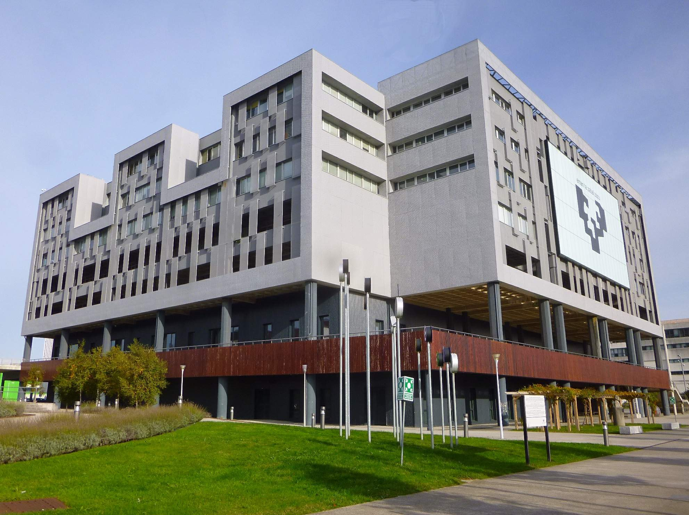

{kind=link}

To the hotel Barceló nervión: Take bus 3247 to the final station (Termibus station). Then take the the tram to Pio Baroja. Then cross the river. See map.
To the residence Blas de Otero: Take bus 3247 to the final station (Termibus station). Then take the metro till Abando station. Then walk or take the train till Zabalburu station.
To the residence Miguel Unamuno: Take bus 3247 to the final station (Termibus station). Then take the metro to Sarriko.
The department is at the Leioa campus of University of the Basque Country (UPV/EHU). Leioa is a town close to Bilbao. The buses 2312, 2314 and 2318 go to the university from Bilbao.
Easiest: Bus 2318, starts from the Termibus station at the football stadium. The Termibus station is connected to the metro station San Mamés, EuskoTren, and Renfe. (See the stop on the map above.)
Alternative 1: Bus 2314, starts from the Abando railway station.
Alternative 2: Bus 2312, starts from the Zabalburu square close to the playground in the middle of the square. It starts to go uphill when leaving for Leioa.
Map of the Termibus station with the final station of the 2318 bus:
Temporarily, the Termibus station moved to the left on the map.
Here one can see the schedule of buses: Bizkaibus. Just write, from which place to which place you want to go.
Hotel Barceló Nervión: Pº Campo Volantín, 11, 48007 Bilbao
Tel.: +34 94 4454700
Residencia Blas de Otero: Calle de las Cortes, 38, 48003 Bilbao
Tel.: +34 944 343 200
Colegio Mayor Miguel Unamuno: Av. Lehendakari Aguirre, 140, 48015 Bilbao
Tel.: +34 946 017 499
Hotel Barcelo Nervion: cross the river, then you can use the tram to get to San Mamés and then take the bus 2318 to the University. See map.
Residencia Universitaria Blas de Otero is close to the Zabalburu station. Take the bus 2312 from there.
Residencia Universitaria Miguel Unamuno: there is a stop of the bus 2314 in front of the residence. You can go to the Universiyt with it.
The following map summarizes the part of the campus you need to know, in order to get to the building of Sciences.

Theoretical Physics Department: After you are at the main entrance of sciences, go straight until you can. Then, turn left, and again, go straight until you can, even when crossing iron doors. Then, you are at a staircase. Go down two levels, and you are at level -2, Department of Theoretical Physics. It is on the ground floor, the reason for the -2 is that the building is on a hill side.
Our offices: they are not at the department. The way to get there is as follows: enter the main entrance. Turn left immediately when you can. Go on the corridor until you reach the end. There is a staircase. Go up one level and continue on the same direction, as you were walking in the long corridor. Go until you can. At some point you can proceed slightly left and right. Choose slightly left. My office is A6.P1.4.
Some pictures to help the orientation:

The entrance of the University.

Main entrance of the Science building. The text says “Zientzia eta Teknologia Fakultatea / Facultad de Ciencia y Technologia”.

Library
Bus 2161: Leaves from the neighborhood of the Areeta metro station. Leaves all day approximately in every 20 minutes.
Bus 2162: Leaves from the neighborhood of the Bidezabal and Algorta metro stations. Leaves all day till not too late every hour 30 minutes (e.g., 9:30).
Bus 2164: Leaves from the neighborhood of the Bidezabal and Aiboa metro stations. There is a bus station close to the swimming pool. Leaves at 8:05 9:05 10:05 14:05 15:05.
METRO: There are elevators at all the stations. It comes quite frequently. Tickets can be bought at ticket machines. You can buy single tickets, however, if you want to travel more than once, which is typically the case, you can also have prepayed tickets called Creditrans for 5,10,15 euros. You can also buy these in newspaper shops. Note that the metro goes to Getxo, but unfortunately not to the University since it is on a hill.
BUS: You can pay for your bus tickets with coins when you enter the bus at the front door or with Creditrans cards. Note that one side of the Creditrans ticket is for the bus, the other side is for the metro. It is always printed how much money you have left on the ticket. When you enter the bus and validate your ticket, you have to enter the number of the zone you are traveling to. Bilbao is zone 1, the IUniversity at Leoa, Getxo and the airport are zone 2.
TRAM: Do not forget to validate the ticket before entering the tram. On the tram it is not possible any more.